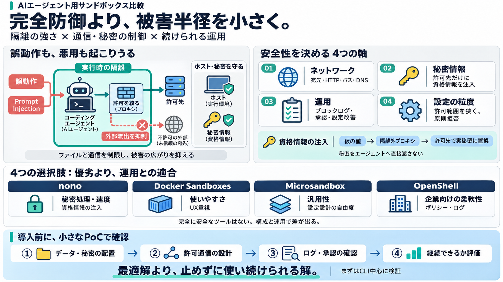

Sandboxing AI Coding Agents: nono vs Docker Sandboxes vs Microsandbox vs OpenShell - Kudelski Security Research Center
One of the coolest features of nono is that, not only its proxy supports credential injection in the traditional directi…

AIコーディングエージェントを安全に使う鍵は、「万能な安全」ではなく、隔離（サンドボックス）で被害半径を絞り続けることです。
AIの誤り（ハルシネーション）だけでなく、攻撃者がプロンプトインジェクションでエージェントの行動を悪用できます。 だから「安全に動くはず」を前提にできません。
サンドボックスは「火を消す」より「延焼を遅らせて範囲を小さくする」発想です。 攻撃が成立しても、ホストや重要データへの到達を遅らせ・制限します。
隔離の強さだけでなく、ネットワーク制御・秘密情報の扱い・運用のしやすさ・設定の粒度が安全性を決めます。
これは、サンドボックス外のプロキシが秘密を「許可された宛先にだけ」注入する仕組みです。 置換先を絞ることで、悪意ある宛先への流出を防ぎます。
提示資料では、nono が秘密処理（credential injection）で“キラー機能”を持つと説明されています。 OAuthログインの取得も吸収できる点が強調されています。
ドメインだけ許可しても、同一ドメイン上の別経路で悪用され得ます。 HTTPメソッド・パス・クエリ、さらにDNSリバインディング対策の粒度が重要です。
資料は noono / Docker Sandboxes / Microsandbox / OpenShell を比較し、どこを妥協しどこを強化できるかを整理します。
隔離の種類（OS/コンテナ/VM/MicroVM）だけでなく、ブロックや許可の振る舞いが安全性に直結します。 TUI承認やログがあると運用継続性が上がります。
資料は「完全に安全なツールはない」前提で、到達できない制御（拒否・許可の不足）も指摘します。 例：許可ディレクトリ内の特定ファイル（.env等）拒否や、syscall許可リスト編集の未達がある可能性。
GUIアプリのサンドボックスは追加コンポーネント（表示サーバー連携など）により攻撃面が増えます。 提示資料の評価範囲では、まずCLI中心の運用が推奨されています。
スコアや比較表をそのまま自社に当てはめるとミスマッチが起きます。 まずデータ分類・秘密の置き場・許可通信範囲を固め、ブロックログと提案が回るかPoCで確認します。
結論は「最適解」より「止めずに使い続けられる解」です。 設定が難しすぎると実運用で無効化され、結果として安全も形骸化します。
AIエージェントは止めるより「隔離して使い続ける」ほうが現実的です。 そのために、ネットワーク制御・credential injection・運用フィードバックを設計に組み込みましょう。
用語：サンドボックス（Sandboxing）／資格情報の注入（credential injection）／被害半径（blast radius）／運用の強靭性（Operational Resilience）
One of the coolest features of nono is that, not only its proxy supports credential injection in the traditional directi…
In nono, a credential can be injected for a specific tool only. The grant is part of that tool's sandbox, so other comma…
| Starting points, assuming the ten controls below are in place whichever you choose. | | | --- | Situation | Start wi…
# Nono: Open-source sandbox for AI agents An AI coding agent opens a terminal, reads a config file, and finds a live cl…
| Skill Vetting | Every skill audited before publishing | Runtime detection only - skill still executes | | Action Appro…